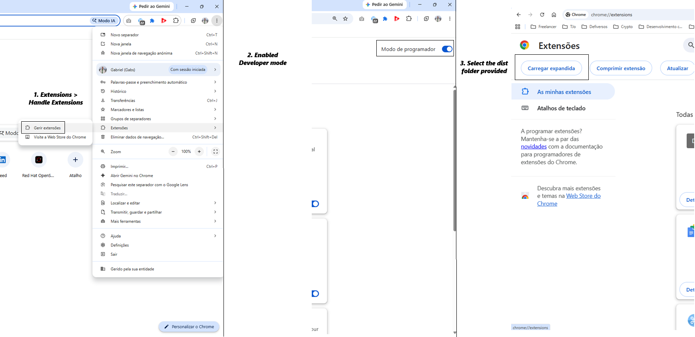
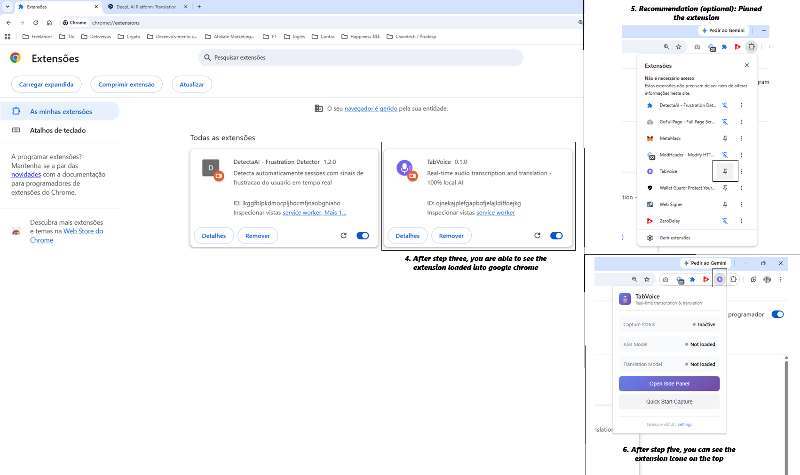
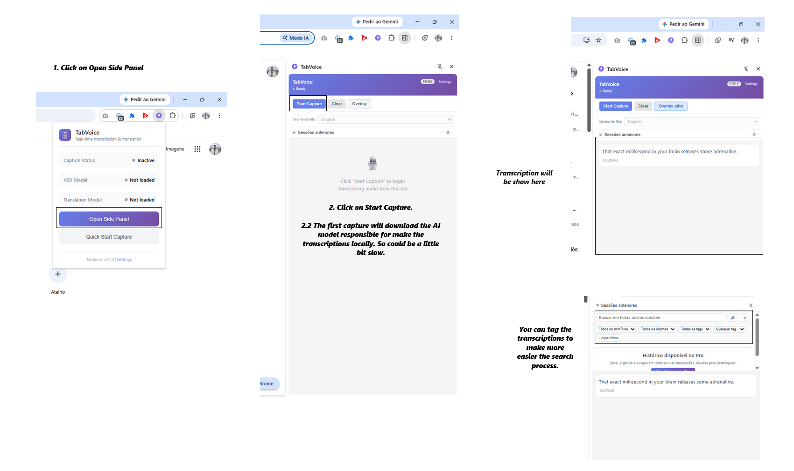
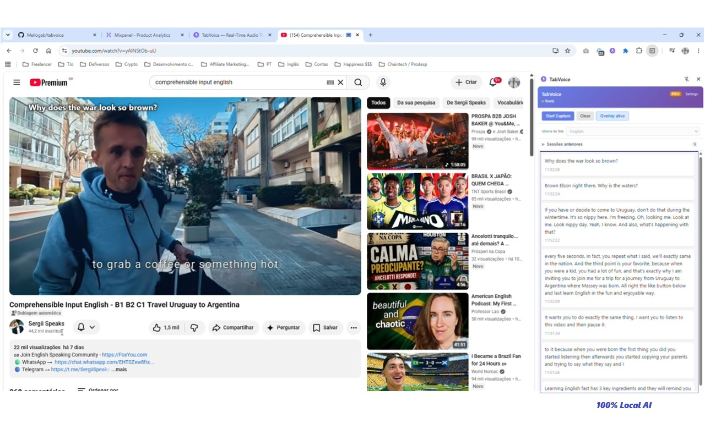
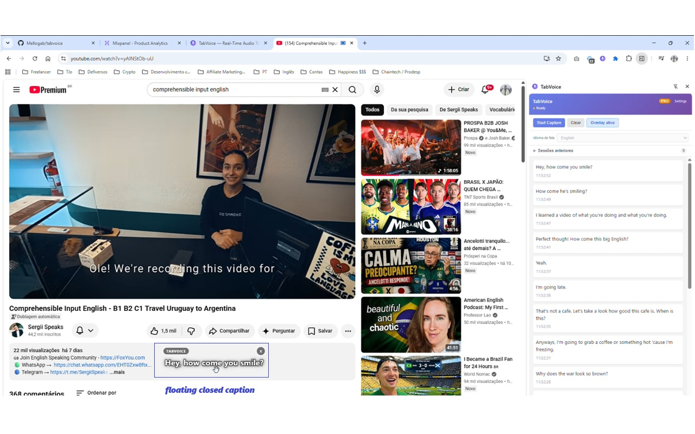
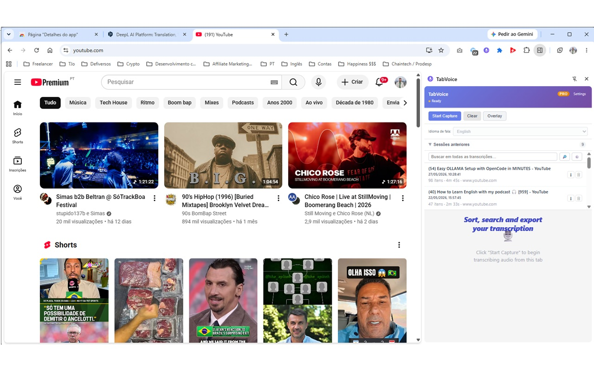
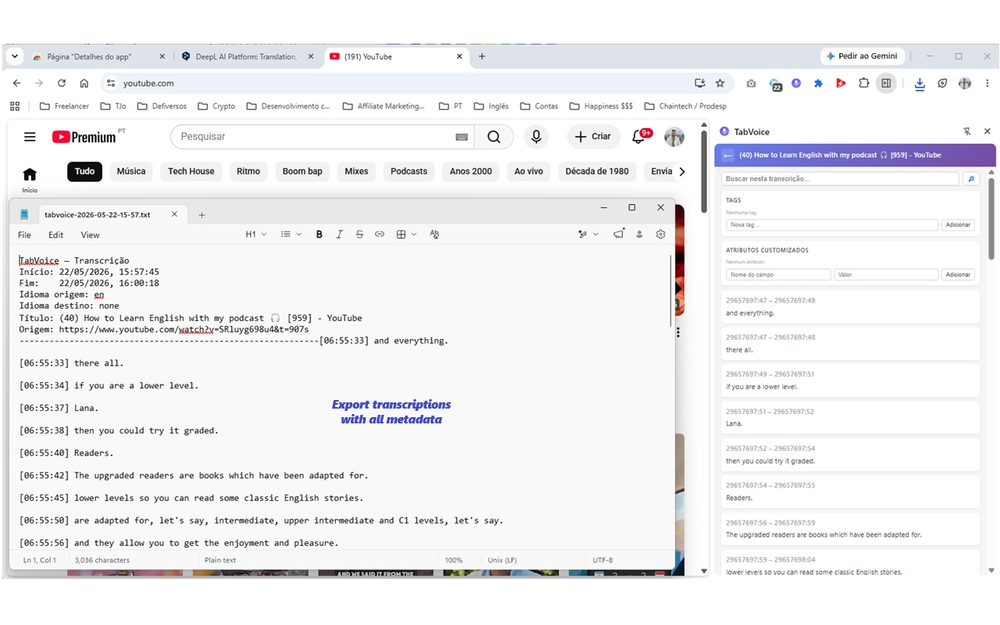
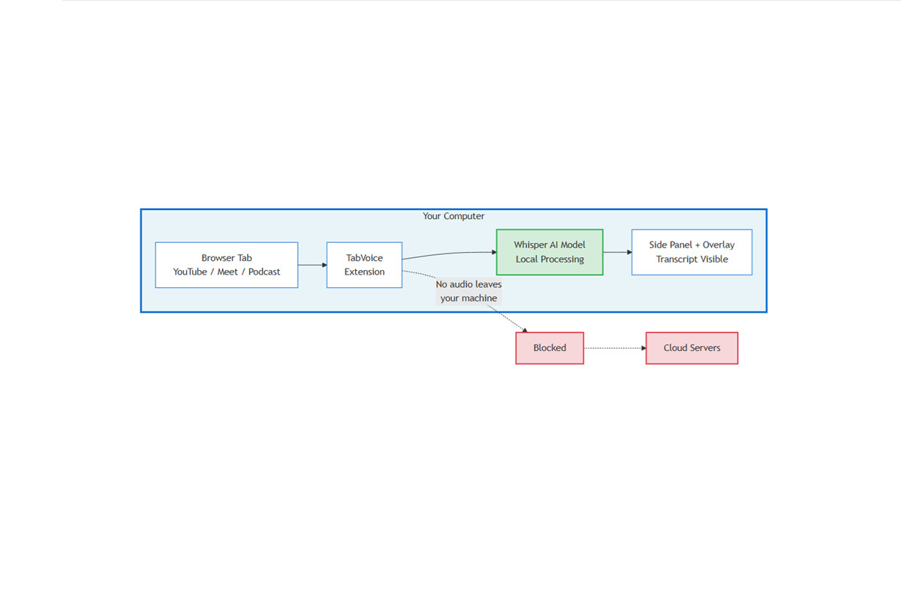

What is TabVoice?
TabVoice is a Chrome extension that transcribes audio from any browser tab in real time — YouTube videos, podcasts, online meetings, or any website that plays sound.
Important: everything happens on your computer. No audio is sent to the cloud. No account is required.
What you need before starting
- A computer with Google Chrome, Microsoft Edge, or Brave browser.
- A modern computer from the last 5–6 years (Mac, Windows, or Linux).
- About 40 MB of free space for the AI model (downloaded once).
- A stable internet connection for the first download. After that, TabVoice can work offline.
Prefer not to install a local folder? Watch a demo instead
We understand that downloading and loading an unpacked extension may feel unusual, especially if you have never done it before.
If you prefer, we can send you a short recorded video demo showing how TabVoice works in a real browser — capturing audio from a YouTube video, transcribing in real time, and exporting the session.
We can also schedule a quick live call where you share your screen and we walk you through the extension without you needing to install anything.
Just reply to the message where you received this guide and let us know which option you prefer.
Why is TabVoice not on the Chrome Web Store yet?
TabVoice is not yet published on the Chrome Web Store for two reasons:
- We are still validating the product. Before paying for a developer account and going through the store review process, we want to make sure TabVoice actually solves a real problem for real users.
- There is a one-time developer fee to publish on the Chrome Web Store. Since we are in the validation phase, we are prioritizing direct testing with beta users first.
Publishing to the store is on the roadmap as soon as the product is validated.
Step 1 — Download the extension files
You will receive a file named something like:
tabvoice-beta-v0.1.0.zip- Save the file to your computer.
- Extract (unzip) the file. You should get a folder named
dist/.- On Windows: right-click the
.zipfile → Extract All. - On Mac: double-click the
.zipfile.
- On Windows: right-click the
- Keep this folder somewhere easy to find, like your Desktop or Downloads folder.
⚠️ Do not delete this folder while the extension is installed. Chrome needs it to run TabVoice.
Step 2 — Enable Developer Mode in Chrome
- Open Chrome (or Edge / Brave).
- In the address bar, type:
chrome://extensions - Press Enter.
- In the top-right corner, turn on Developer mode.

Step 3 — Load TabVoice into the browser
- Click the button Load unpacked (or Load unpacked extension).
- A file picker will open.
- Select the
dist/folder you extracted in Step 1. - Click Select Folder.
TabVoice should now appear in your extensions list.

Step 4 — Pin TabVoice to your toolbar
- Look for the extensions icon (a puzzle piece) in the top-right corner of Chrome.
- Click it.
- Find TabVoice in the list.
- Click the pin icon next to it.
Now the TabVoice icon will stay visible in your toolbar.
Step 5 — Open TabVoice
- Click the TabVoice icon in the toolbar.
- The Side Panel will open on the right side of the browser.

Step 6 — Download the AI model
The first time you use TabVoice, it needs to download a small AI model (~40 MB).
- In the Side Panel, click Start Capture.
- A progress bar will appear. Wait until the download is complete.
- This only happens once. The model is saved on your computer.
⏱️ This can take 1–3 minutes depending on your internet speed.
Step 7 — Transcribe audio from any tab
- Open a tab with audio. For example:
- A YouTube video
- A podcast episode
- A video interview
- An online meeting (Microsoft Teams, Google Meet, Zoom in browser, etc.)
- Make sure the audio is playing or about to play.
- Click Start Capture in the TabVoice Side Panel.
- The transcription will appear in the Side Panel in a few seconds.
💡 Tip: For best results, use videos or calls in English. Other languages are on the roadmap.

Step 8 — Use the floating captions overlay
While capturing, you can show the transcription directly over the video:
- In the Side Panel, click Show Overlay.
- A floating caption box will appear on the webpage.
- You can drag it to move it where you prefer.

Step 9 — Stop and save
- When you are done, click Stop Capture in the Side Panel.
- The transcription is saved automatically inside the extension.
- You can search past sessions, add tags, or export the text as a
.txtfile.


Important limitations (please read)
TabVoice is still an early beta. These are known limitations:
| Limitation | What it means |
|---|---|
| English only for now | The transcription works best with English audio. Other languages will come later. |
| Not word-level synced | The overlay shows the current segment, not each word perfectly timed to the video. |
| No speaker labels | If multiple people speak, the transcription does not say who said what. |
| First download required | The first time you use it, ~40 MB is downloaded. After that, it works offline. |
| Works in Chrome/Edge/Brave | Other browsers are not supported yet. |
| Live, not perfect | You will see partial drafts while someone is speaking. The final text appears a few seconds after they stop. |
Test ideas
If you are not sure what to test, try one of these:
- Open a YouTube interview in English and transcribe 2 minutes.
- Join a Google Meet call (with consent from participants) and capture 5 minutes.
- Open a podcast page and transcribe an episode segment.
- Try the overlay feature while watching a video.
- Stop the capture and export the session as
.txt.
How to share feedback
Your feedback is the most valuable part of this test. Please tell us:
- Did it install easily? If not, where did you get stuck?
- Did the transcription start quickly? How many seconds did it take?
- How accurate was the transcription?
- Would you use this in your daily work? Why or why not?
- What is missing for this to be useful to you?
- Did you notice any bugs?
You can reply to the message where you received this guide.
Troubleshooting
"This extension may have been corrupted"
- Make sure you did not delete or move the
dist/folder. - Do not rename the folder after loading it.
The Side Panel does not open
- Try clicking the TabVoice icon again.
- Make sure TabVoice is pinned to the toolbar.
Transcription does not start
- Check that audio is playing in the active tab.
- Try refreshing the page.
- Make sure you waited for the model download to finish.
The overlay does not appear
- Some websites block overlays. Try on YouTube first.
- Make sure you clicked Show Overlay while a capture is active.
The model download is very slow
- This depends on your internet connection. It only happens once.
- If it fails, close the Side Panel and click Start Capture again.
Privacy note
TabVoice does not send your audio or transcripts to any server. The AI model runs entirely inside your browser. The only network request is the first download of the model from Hugging Face, a public AI model repository.

Thank you!
Your time and feedback help shape the future of TabVoice.